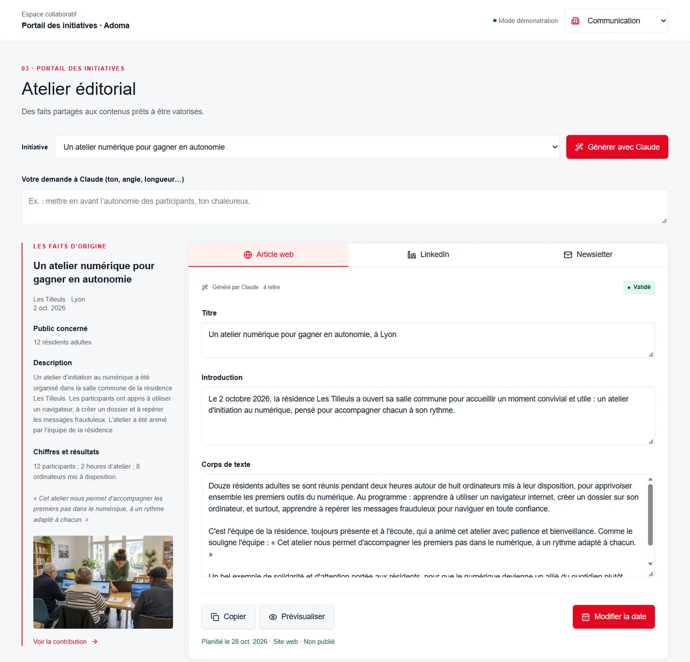

Univers Adoma · étude exploratoire
Résidences : portail de contribution éditoriale
Simplifier la remontée des initiatives des résidences et leur valorisation par la communication.
- Parcours : la résidence propose, la communication valide et diffuse.
- Génération par Claude d'un article, d'un post LinkedIn et d'une newsletter, à partir des seuls faits saisis.
- Kit de diffusion par public et calendrier de publication.
